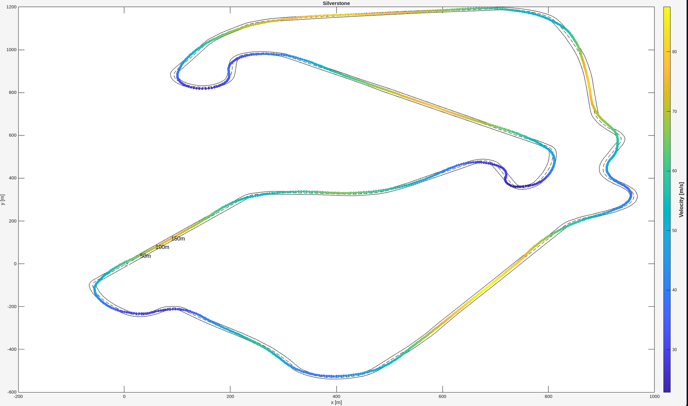
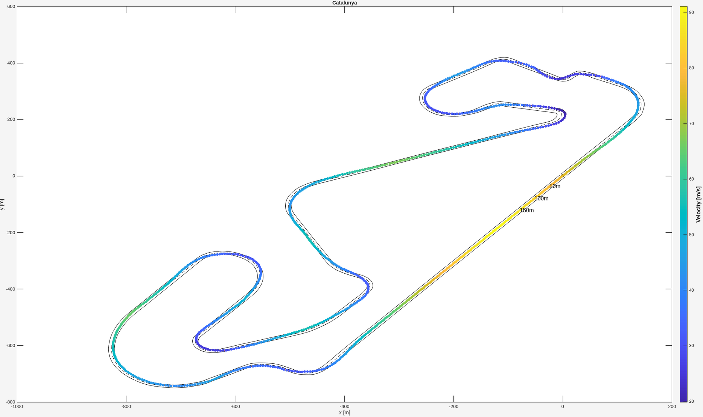

MATLAB‑based optimal control framework to compute time‑optimal racing trajectories using a dynamic bicycle model.
View on GitHubrumbX is an optimal control solver written in MATLAB for racing trajectory optimization. It formulates the problem using a dynamic bicycle model with simplified tire forces and solves for a time‑optimal racing line along a track, respecting vehicle dynamics, track boundaries, and control limits. This project couples vehicle physics with nonlinear programming to compute the fastest feasible trajectory.
Clone the repository and ensure you have MATLAB R2021+ installed along with CasADi 3.6 and IPOPT. Follow the instructions in the README to load track data (CSV), set problem parameters, and solve the optimal control problem using the provided scripts.
rumbX includes example results for well‑known tracks such as Silverstone and Catalunya, demonstrating its ability to compute physically consistent, time‑optimal racing trajectories that respect model constraints.

Silverstone

Catalunya